Projects
You can click on the title of each project's name to redirect you to the GitHub repository of the project or the project's website itself. Some personal projects are never left finished, simply because I still have lots to learn and more algorithms, libraries, and APIs I want to implement! You are free to email me if you have personal input or suggestions!
Mandelbrot Movie
This is a project developed in C (C99 Programming Language Standard) to calculate and visualize the Mandelbrot Set. The main function behind this project is motivated by the Mandelbrot function, M(Z, C) = Z^2 + C. Where Z is the center, C is a constant, and Z is an iteration variable. We are interested in how many times Z can iterate, and we set a maximum iteration value because some functions can iterate indefinitely. M and C can both be imaginary numbers. The program also deals with how colors are represented when plotting the Mandelbrot function on a canvas. We use the P6 color pallete where each unique color corresponds to a unique iteration value that is modulated to a set number. To accelerate the number of for loops in the code, parallel programming was implemented to optimize the computation across the cores of the CPU.
The video is my own fractal zoom calculated at (0.37280535024, -0.2551419600000041) with 1750 maximum iterations.
MNIST Neural Network in RISC-V
A digit classifier written completely in RISC-V ISA. All matrix operations were written in the ISA. This was a school project for UC Berkeley's CS 61C: Machine Structures. This project is special as RISC-V was originated in UC Berkeley and to develop this project it's birthplace was an honor. The full specification of the project for this course can be found here. The project is a simple, barebone implementation of the MNIST neural networks. Compared to coding machine learning applications in Python with libraries such as TensorFlow, this definitely got my hands dirty with assembly and neural networks. Operations include vector inner product, matrix multiplications, and thresholding. The simple neural network consists of input matrix, a hidden layer, and output neurons. The MNIST dataset can be loaded to train and improve the model, thus enabling to put a user input that is 28*28 pixels.
Animation credits: @msvanjie
MNIST Neural Network in Python

For the final project of UC Berkeley's CS 188: Introduction to Artificial Intelligence, a neural network implemented in Python to classify digits. The implementation of the neural network is much more advanced compared to the one created with RISC-V in the previous project. In addition to this project, I implemented another neural network in Python using the TensorFlow library, which is publicly linked to this title. Compared to the school project, my personal implementation is much simpler and generalized with the library functions. Overall, it was fun to implement neural networks from low level language with RISC-V and higher level language with Python and TensorFlow.
Scheme Interpreter
This is a project developed in Python. This was the final project for UC Berkeley's CS 61A: Structure and Interpretation of Computer Programs, which is an introductory programming course for Computer Science majors. The full spec written for the project can be found here. The project runs a REPL environment of Scheme in the Python shell, complete with all Scheme functions and properties, much similar to MIT/GNU Scheme. It even throws exceptions when it detects errors and displays the corresponding error type. The project exercises all the fundamentals learned from this course such as object oriented programming, list comprehension, linked lists, recursion, tail recursion, and more. An interactive online version can be found here made by the staff of this course. Overall, it was fun to make a programming language run another programming language!
AI Pacman

A series of projects written in Python for UC Berkeley's CS 188: Introduction to Artificial Intelligence. The project implements AI functions to the retro game of Pacman. First project was an implementation of search algorithms such as depth first search, breadth first search, uniform cost search, and A* algorithms. Also implemented heuristics for these algorithms to optimally find the most efficient and rewarding path for Pacman to take in multiple Pacman maze environments. The second part of the project involved using game trees such as minimax and expectimax to calculate the the most optimal pathing and strategy for Pacman in multiple Pacman maze environments. The third part involves using reinforcement learning with implementations of Markov Decision Processes, Q-learning, and policies.
RISC-V CPU
A simulation of a single cycle RISC-V CPU created using logic circuits in Logisim. The CPU has 8 registers and has modern architecture and datapath such as pipelining. Simple RISC-V ISA can be loaded in and the simulated CPU can output results. This was the final project of UC Berkeley's CS 61C: Machine Structures and the full spec of the project can be found here (Part 1) and here (Part 2).
AI GO

This project is a personal side project written in Java, meant to apply all my knowledge in computer science. It is in development and there are always new modifications or features added when I learn something new. So far, my knowledge in object oriented programming, data structures, and algorithms to make the backend of the ancient Chinese game of Go. Deeply inspired by AlphaGo, I soon want to implement artificial intelligent features once I finish my Introduction to Artificial Intelligence and Machine Learning courses. Data structures such as game trees are too inefficient and impractical for a traditional computer to compute. Once I understand how techniques like deep learning work, I hope to implement it to this game. For now, it is a playable game showing statistics of territories and possible moves. I soon plan to also implement player to player functionality and an iOS or Android app. If you have some input or questions, feel free to email me!
Yelp Maps

A project developed in Python. It is a small replica of Yelp review ratings and has visualization features using machine learning. It makes use of the Yelp academic dataset. This was the second project for UC Berkeley's CS 61A: Structure and Interpretation of Computer Programs and the full spec of this project can be found here. It uses list comprehensions to process data of restaurant at UC Berkeley. The map coloring that is outputted from this project is the Voronoi diagram.
AI PT (with Google's Teachable Machine)
I started losing weight and getting fit with a personal trainer. Having a personal trainer when exercising definitely helps because he/she motivates you. But after my gym membership ended, I had to exercise by myself. I found that hard to do. So I used Google's Teachable Machine version 2.0 to create my own free personal trainer.
I trained models that correctly determine if a posture for an exercise is correct or incorrect. Programmed with voice feedback, the AI trainer counts and confirms that you are exercising correctly. I've included negative voice feedback for correction or slow pace and positive voice feedback for motivation. It is currently a prototype, and purely a demo to test out Google's machine learning model. You can try the prototype yourself using your webcam!
AI Snake
Snake game written in JavaScript using the P5 library. I've implemented artificial intelligent features and used neural networks to make the computer learn how to win snake from zero knowledge. The backend of the snake and code was provided by The Coding Train. Artificial intelligence was coded by myself with the help of the P5 Machine Learning Library with JavaScript. Click to play or interactively watch how the AI bot learns how to play snake!
Gitlet
A replica of git made in Java. This was a school project fro UC Berkeley's CS 61B: Data Structures and Algorithm course.
BearMaps
Map using mostly search algorithms to find shortest paths. This project exercises graph theory and algorithms.
Enigma
A replica of the engima machine that was used in World War II to decrypt messages. This was a school project for UC Berkeley's CS 61B: Data Structures and Algorithm course.
TwitBot
A tiny powerful Twitter bot written in Python. It uses the Tweepy library, bridging the connection with the Twitter API and Python. I've built a user interface that utilizes the power of automation.